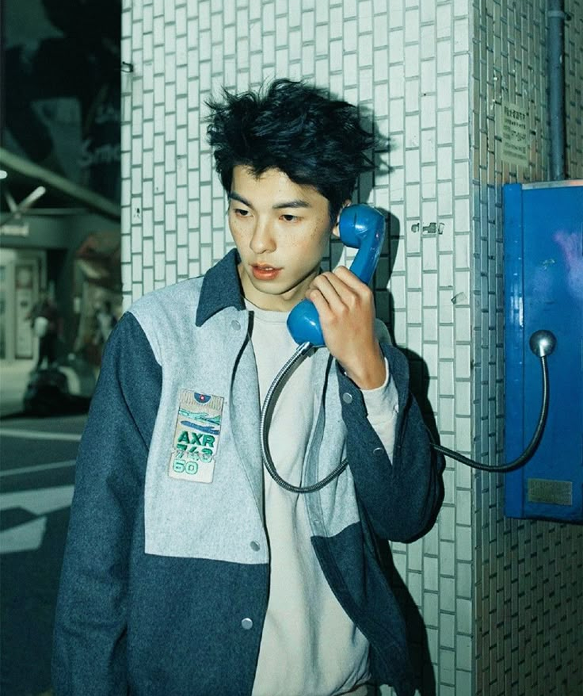

藤井 憂憂
Fujii Yuyu

身長:185cm
出身:東京都
言葉:標準語、広島弁
経歴
小学生時代の6年間を大阪で過ごし、日野市で育つ。日野市立日野第三中学校卒業後、全寮制の聖パウロ学園高等学校に進学。高校在学中に劇団雲のシェイクスピア喜劇『十二夜』を見て役者を志す[1]。上智大学文学部ドイツ文学科在学中、シェイクスピア研究会公演『十二夜』で初舞台を踏む。同大学中退。
出演
『SISTERS』 作・演出：長塚圭史
『から騒ぎ』 作：シェイクスピア／演出：蜷川幸雄
『ムサシ』 作：井上ひさし／演出：蜷川幸雄
『江戸の青空～Keep On Shakin’～』 演出：G2
『ワルシャワの鼻』 作：生瀬勝久／演出：水田伸生
『海をゆく者』 作：コナー・マクファーソン 演出：栗山民也
1 / 1